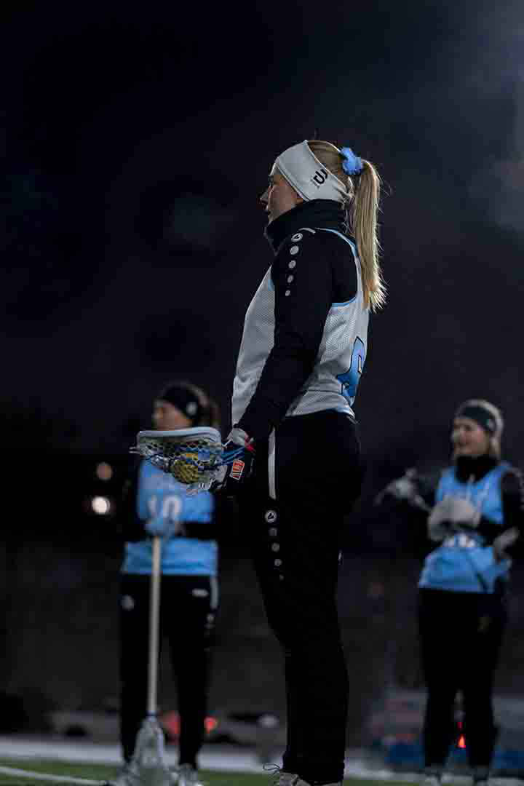

Treningskamper:
Fredag 17. september kl 20.15-22.00, Frogner
Fredag, 24. september kl 20.15-22.00 Linderud
Tirsdag 14. oktober kl 20.15-22.00 Frogner
Onsdag 27. oktober kl 19.00-20.15 Domus
Kamper hvor Oslo skal dømme og være i sekretariat:
Tirsdag, 31. august, kl 20.15-22.00, Linderud
Onsdag, 22. september kl 17:30-19.00 Domus
Lenker til nyttige nettsider
• https://amerikanskeidretter.no/forbund/ • www.skadefri.no
• https://www.facebook.com/antidopingnorge/
Kvalifisering til NM:
Fredag-søndag 22-24 September Oslo Lacrosse – BSI Owls Fredag klokken 16.00-17.30
Christiania Lacrosse – Oslo Lacrosse Lørdag klokken 09.00-10.30
GSI Grizzlies – Oslo Lacrosse lørdag klokken 13.30-15.00
Oslo Lacrosse – Saints søndag klokken 11.00-12.30
